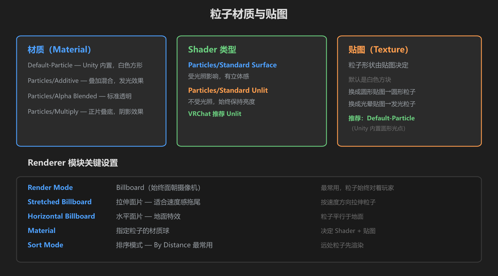
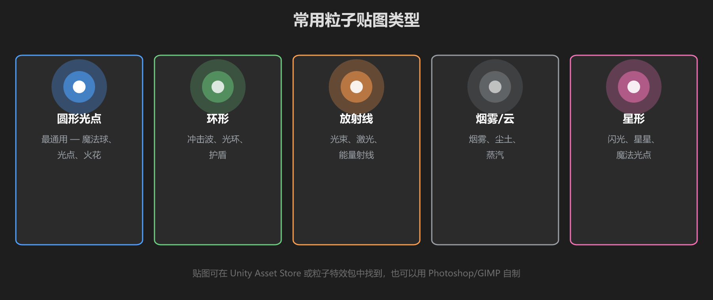

第 3 篇：材质与贴图 — 让粒子变好看
前面两篇你的粒子还是白色方块。这一篇解决这个问题：材质（Material）决定粒子的渲染方式，贴图（Texture）决定粒子的形状。
1. 材质、Shader、贴图 — 三者的关系

图：材质选择（左）、Shader 类型（中）、贴图（右），以及 Renderer 模块关键设置
| 概念 | 是什么 | 在哪里设置 |
|---|---|---|
| 材质 (Material) | 包含 Shader + 贴图 + 各种参数的一个「配置文件」 | Renderer 模块 → Material |
| Shader | 决定「怎么画」—— 叠加？透明？受光？ | 材质球的 Shader 下拉菜单 |
| 贴图 (Texture) | 决定粒子「长什么样」—— 圆形？星形？ | 材质球的贴图槽 |
2. Unity 内置的粒子材质
Unity 自带几个非常好用的粒子材质，不需要自己做：
| 材质名 | 混合模式 | 效果 | 适合 |
|---|---|---|---|
| Default-Particle | Alpha Blended | 标准透明，白色方形 | 通用，入门默认 |
| Particles/Additive | 叠加（Additive） | 亮色叠加到背景上，发光感 | 火焰、魔法、光效 |
| Particles/Alpha Blended | Alpha 混合 | 标准透明混合 | 烟雾、尘土 |
| Particles/Multiply | 正片叠底 | 颜色相乘，变暗 | 阴影、黑烟 |
最常用的两个：Additive（发光特效）和 Alpha Blended（半透明特效）。80% 的情况用这两个就够了。
3. Shader 的选择
在材质球的 Inspector 顶部有一个 Shader 下拉菜单。对于粒子特效，最重要的选择是：
| Shader | 特点 | 推荐场景 |
|---|---|---|
| Particles/Standard Surface | 受场景光照影响，有立体感和阴影 | 需要真实感的特效 |
| Particles/Standard Unlit | 不受光照影响，始终保持设定亮度 | VRChat 推荐 大多数特效 |
在 VRChat 中，推荐使用 Unlit Shader。因为世界空间 UI 和特效不应该受世界光照变化的影响——你不想让传送门的颜色在暗处变得看不见。
4. 贴图 — 粒子的形状
默认情况下粒子是白色方块。把贴图换成其他形状，效果立刻就不一样了。

图：五种常用粒子贴图类型 — 圆形光点、环形、放射线、烟雾/云、星形
| 贴图类型 | 适合特效 | 哪里找 |
|---|---|---|
| 圆形光点 | 魔法球、光点、火花（最通用） | Unity 自带 Default-Particle 贴图 |
| 环形 | 冲击波、光环、护盾 | Asset Store 或自制 |
| 放射线 | 光束、激光、能量射线 | Asset Store 或自制 |
| 烟雾/云 | 烟雾、尘土、蒸汽 | Asset Store 粒子包 |
| 星形 | 闪光、星星、魔法光点 | 自制（白色星形 + 透明背景） |
如何替换贴图
- 在 Project 窗口找到你的材质球（或新建一个）
- 选中材质球，在 Inspector 里找到贴图槽（通常叫 Main Texture 或 Base Map）
- 把贴图文件拖进去
- 在粒子系统的 Renderer 模块中，把 Material 设为你刚改好的材质球
5. Renderer 模块的关键设置
Renderer 模块控制粒子「怎么被画到屏幕上」。以下是几个最重要的参数：
| 参数 | 作用 | 推荐值 |
|---|---|---|
| Render Mode | 粒子面片的朝向 | Billboard（始终面朝摄像机） |
| Stretched Billboard | 按速度方向拉伸粒子 | 拖尾、光束效果 |
| Horizontal Billboard | 粒子平行于地面 | 地面光环、落在地上的特效 |
| Material | 指定材质球 | 拖入你准备好的材质 |
| Sort Mode | 粒子之间的渲染排序 | By Distance（远处先画） |
| Min/Max Particle Size | 限制粒子在屏幕上的最小/最大像素 | 默认即可 |
注意：如果 Render Mode 设为 Mesh，粒子会变成 3D 模型而不是 2D 面片。这会大幅增加性能开销，VRChat 中尽量避免。
6. 练手：给火焰加上材质
- 用上一篇做的火焰粒子系统
- 在 Project 窗口右键 → Create → Material，命名为「FireMat」
- Shader 选
Particles/Standard Unlit - Rendering Mode 选 Additive
- 把材质拖到粒子系统 Renderer 模块的 Material 槽
- 观察效果 — 火焰现在有了「发光」的感觉！
学前检查清单
- 理解了材质、Shader、贴图三者的关系
- 知道 Additive 和 Alpha Blended 的区别
- 知道 VRChat 中推荐使用 Unlit Shader
- 会给粒子系统指定自定义材质
- 知道 Render Mode 选 Billboard 是最常用的